Парфуми для дому
Парфуми для дому — це фінальний штрих атмосфери.
Легкий аромат, який оживляє простір, залишаючись ненав’язливим і природним.
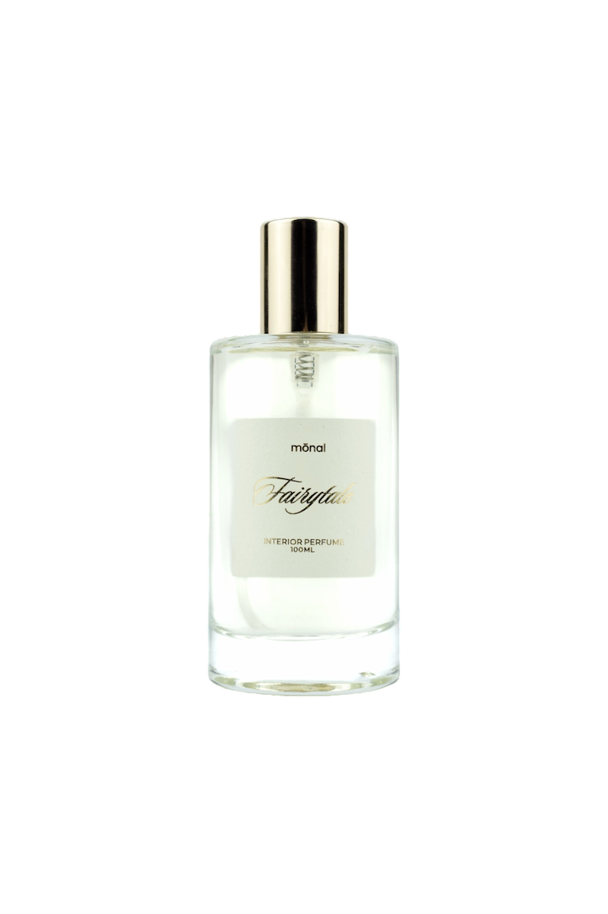
LIMITED EDITION
FAIRYTALE
Склад:
Верхні ноти: коньяк, кориця
Серце: амбра, ваніль
База: боби тонка, сандал
Відчуття аромату:
Теплий і глибокий аромат із пряно-коньячним стартом, де благородне звучання коньяку поєднується з м’якою
пряністю кориці. У серці розкриваються амбра та ваніль: округлі, теплі відтінки, що створюють відчуття
затишку й плавного, гармонійного звучання без різкості.
Фінал переходить у боби тонка та сандал, формуючи м’яку деревно-амброву основу з теплим, збалансованим шлейфом. Аромат огортає простір спокійно й рівно, створюючи атмосферу вечірнього комфорту.
Характер і настрій:
Атмосфера тепла, затишку й камерної гармонії.
Підійде для вітальні, спальні, кабінету, лаунж-зони або зони відпочинку.
Це інтер’єрні парфуми для дому з теплим, глибоким і благородним характером.
Дають змогу швидко змінити атмосферу простору, наповнюючи його відчуттям затишку та м’якого вечірнього тепла.
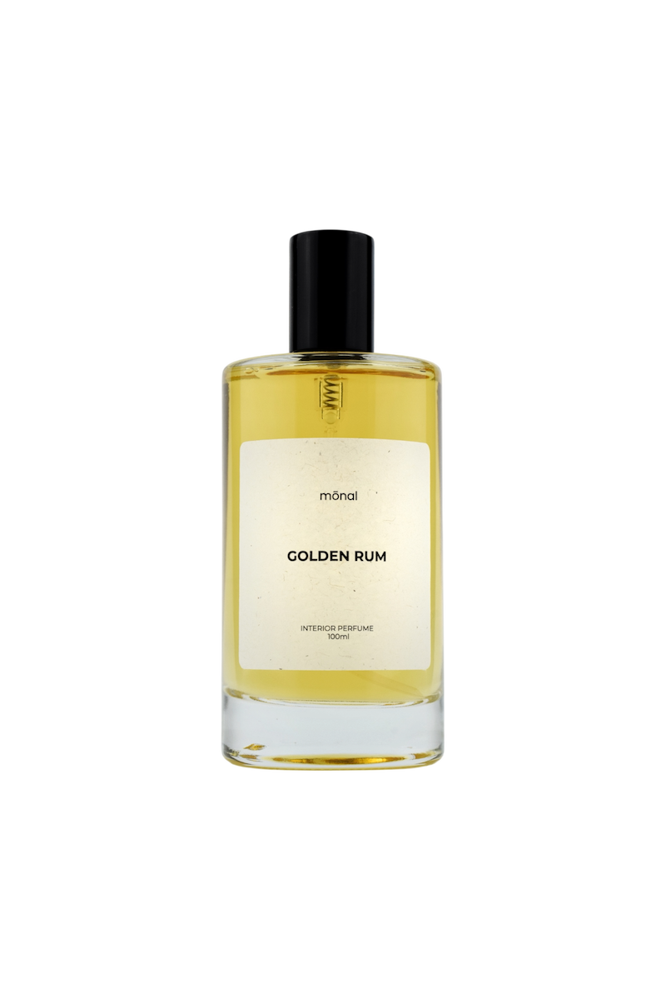
GOLDEN RUM
Склад:
Верхні ноти: ром, кориця
Серце: мускатний горіх, ваніль
База: кедр, сандал
Відчуття аромату:
Глибокий і затишний аромат із пряно-ромовим стартом, де тепло рому поєднується з м’якою деревною
солодкістю кориці. У серці звучать мускатний горіх і ваніль: округлі, кремові, теплі відтінки, що
створюють комфортне звучання без різкості.
Фінал переходить у кедр і сандал, формуючи спокійну деревну основу з теплим шлейфом. Аромат заспокоює простір і створює відчуття вечірнього розслаблення.
Характер і настрій:
Атмосфера спокою, комфорту й м’якого вечірнього затишку.
Підійде для вітальні, спальні, кухні, кабінету, лаунж-зони або зони відпочинку.
Це інтер’єрні парфуми для дому з теплим, глибоким і затишним характером.
Дають змогу легко змінити атмосферу простору, наповнють його відчуттям спокою та вечірнього комфорту.
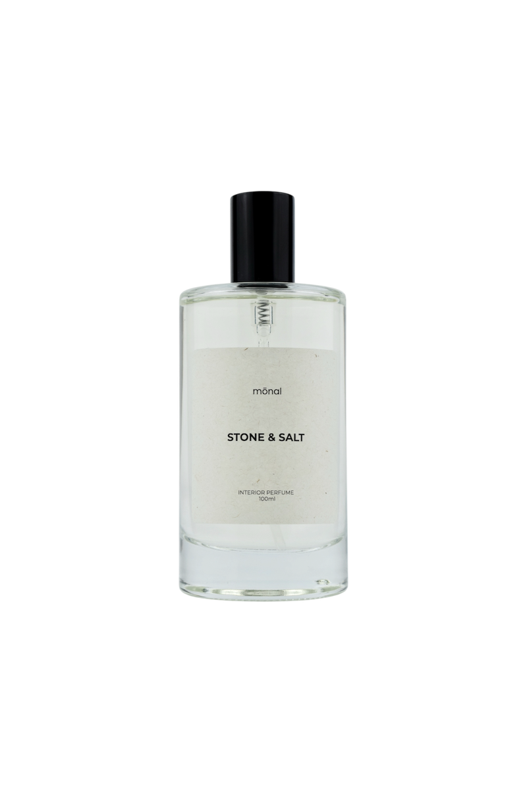
STONE & SALT
Склад (піраміда аромату):
Верхні ноти: морська сіль, грейпфрут
Ноти серця: цитруси, шавлія
Базові ноти: морські водорості
Відчуття аромату:
Свіжий морський аромат із солонуватими акордами морської солі та яскравою цитрусовою свіжістю грейпфрута,
що відкривають композицію живо й прозоро. У серці з’являються цитрусові та шавлія, додаючи сухої зеленості
та відчуття природної рівноваги.
Фінал тримається на морських водоростях, що створюють глибину, чистоту й легкий ефект прохолодного морського повітря. Звучання невагоме, чисте й стримане, без солодких або теплих відтінків.
Характер і настрій:
Морський, свіжий, чистий, стриманий.
Підійде для ванної кімнати, спальні, вітальні, передпокою або SPA-зони.
Це інтер’єрні парфуми для дому з чистим, мінеральним і стриманим звучанням.
Створюють відчуття простору, свіжості та внутрішньої рівноваги у кожному куточку.
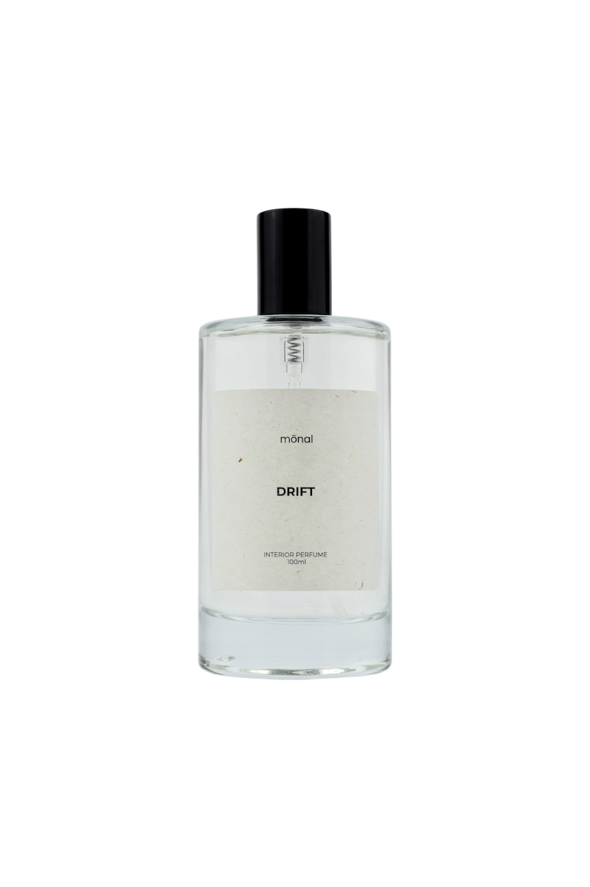
DRIFT
Склад (піраміда аромату):
Верхні ноти: морські ноти, бергамот
Ноти серця: розмарин, шавлія, герань
Базові ноти: ладан, пачулі
Відчуття аромату:
Густий, глибокий аромат із виразним ладаном у центрі звучання, який одразу задає глибину
й смолисту теплоту. Морські ноти та бергамот працюють фоново — не для яскравої свіжості,
а для легкого прохолодного відтінку, що пом’якшує щільність композиції.
У серці розкриваються розмарин, шавлія та герань, вони лише підсилюють смолисту основу, додаючи сухої трав’яної опори. Фінал тримається на ладані й пачулі, звучить насичено, стабільно й об’ємно.
Характер і настрій:
Глибокий, смолистий, стабільний.
Підійде для вітальні, робочого простору, ванної або SPA-зони.
Це інтер’єрні парфуми для дому з глибоким, насиченим і медитативним характером.
Формують атмосферу зосередженості, тиші та внутрішньої стабільності у просторі.
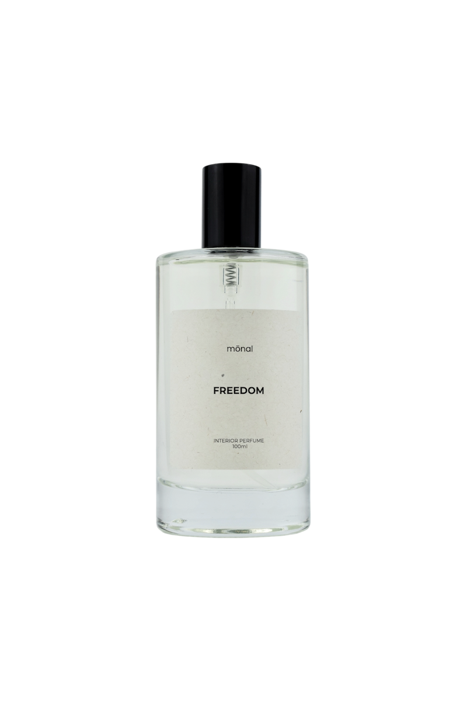
FREEDOM
Склад (піраміда аромату):
Верхні ноти: фісташки, бергамот, кардамон
Ноти серця: рожевий перець, тубероз
Базові ноти: іланг-іланг, жасмин, боби тонка
Відчуття аромату:
Кремово-ніжний аромат із теплим акцентом фісташок, бергамоту та кардамону відкривається
м’яко й делікатно. У серці звучить квіткова пряність рожевого перцю та туберози,
що додає глибини й об’єму.
Фінальне звучання тримається на оксамиті іланг-ілангу, жасмину та солодкуватих бобах тонка, які створюють відчуття затишку та внутрішньої рівноваги.
Характер і настрій:
Це спокійний, теплий і злагоджений аромат із легким пряним характером.
Він не домінує, а огортає, робить простір м’якшим і гармонійним.
Підійде для спальні, вітальні, кабінету, лаунж- або релакс-зони.
Це інтер’єрні парфуми для дому з м’яким, теплим і затишним звучанням.
Допомагають створити атмосферу спокою, гармонії та внутрішньої свободи.
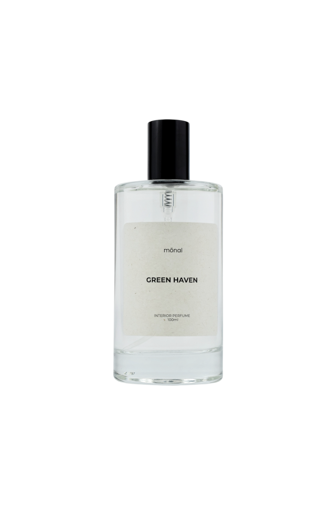
GREEN HAVEN
Склад (піраміда аромату):
Верхні ноти: мандарин, лимон
Ноти серця: бергамот, імбир
База: жасмин, білий чай
Відчуття аромату:
Свіжий цитрусовий старт: мандарин і лимон звучать яскраво й сонячно.
У серці бергамот та імбир дають сухіший, глибший цитрусовий акцент і теплу пряність.
Фінальне звучання переходить у м’який, чистий шлейф жасмину та білого чаю — світлий, спокійний, без солодкого тиску.
Характер і настрій:
Природна рівновага, свіже тепло, прозорість і світло.
Аромат наповнює простір гармонією, не агресує, не домінує, а вирівнює атмосферу.
Підійде для кухні, ванної кімнати, вітальні або тераси.
Це інтер’єрні парфуми для дому зі свіжим, легким і природним характером.
Освіжають простір і наповнюють його відчуттям чистоти, світла та балансу.
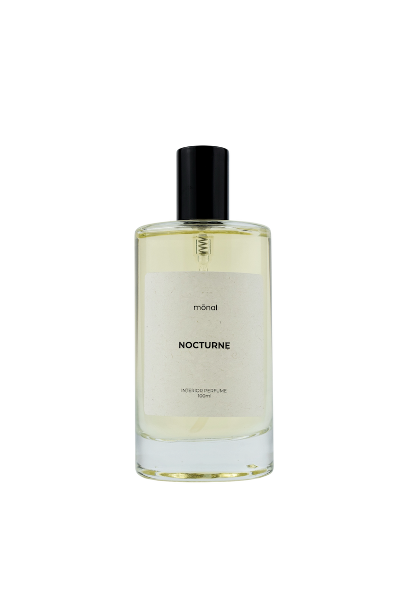
NOCTURNE
Склад (піраміда аромату):
Верхні ноти: мандарин, червоне яблуко
Ноти серця: шавлія, бурбонський перець
База: деревина, тютюн, пачулі
Відчуття аромату:
Соковитий старт: мандарин дає прохолодну свіжість, червоне яблуко додає м’яку фруктову солодкість.
Серце звучить пряно — шавлія і бурбонський перець створюють суху, зелену, трохи пекучу теплоту.
Фінал переходить у деревно-тютюновий шлейф із пачулі. Звучання тепле, об’ємне, впевнене, але не агресивне.
Характер і настрій:
Зріле тепло, спокійна мужність, м’яка густина, стабільність без різкості.
Підійде для спальні, вітальні, робочого простору чи лаунж-зони.
Це інтер’єрні парфуми для дому з теплим, глибоким і впевненим звучанням.
Формують атмосферу спокійної сили, стабільності та вечірньої зібраності.
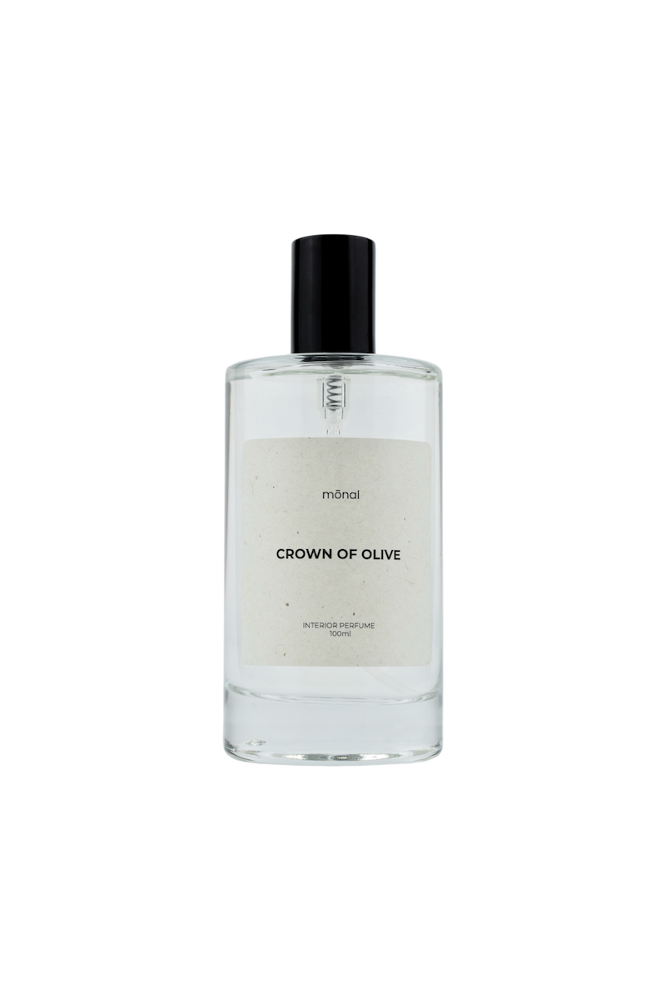
CROWN OF OLIVE
Склад (піраміда аромату):
Верхні ноти: жасмин, персик, кедр, груша, аніс
Ноти серця: лаванда, лимон, троянда
База: олива, фіалка, деревні ноти
Відчуття аромату:
Квітково-фруктовий старт: жасмин і персик звучать м’яко, груша та аніс дають легку пряну рухливість.
Серце світлішає завдяки лимону, лаванді та троянді — аромат стає врівноваженим, чистим і світлим.
Фінал переходить у теплий деревний шлейф з нотою оливи та фіалки, створюючи спокійний, округлий,
комфортний характер без різкості.
Характер і настрій:
Елегантність, світло, чистота, спокійна солодкість, врівноваженість.
Підійде для спальні, вітальні, кабінету, лаунж-зони або бібліотеки.
Це інтер’єрні парфуми для дому зі світлим, елегантним і врівноваженим характером.
Наповнюють простір м’якою радістю, теплом і відчуттям гармонії.
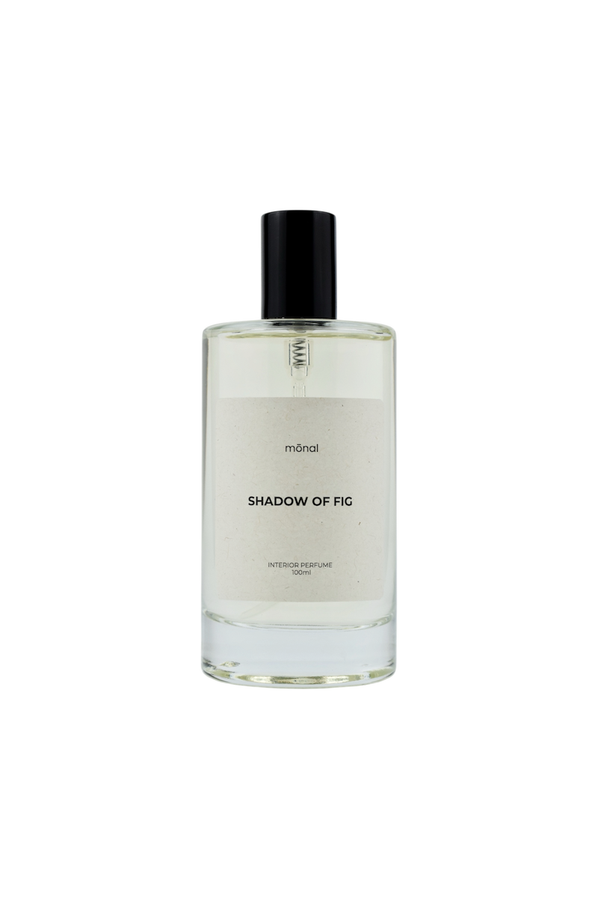
SHADOW OF FIG
Склад (піраміда аромату):
Верхні ноти: озон, фрезія
Ноти серця: жасмин, герань, вишневий цвіт, інжир, бамбук
База: пудра, пачулі, деревні ноти
Відчуття аромату:
Повітряний, чистий старт з озону й фрезії створює прозоре, легке звучання.
Квіткове серце — жасмин, герань, вишневий цвіт — дає ніжність без солодкості,
а інжир додає соковитість, не перевантажуючи аромат. Фінал — м’який, пудрово-деревний,
з пачулі та деревних нот, які формують спокійний, округлий шлейф.
Характер і настрій:
Спокій, ніжність, чистота, легкість, повітряність.
Підійде для спальні, вітальні, зони релаксу або студійного простору.
Це інтер’єрні парфуми для дому з ніжним, чистим і врівноваженим звучанням.
Наповнюють простір відчуттям легкості, затишку та спокійної гармонії.
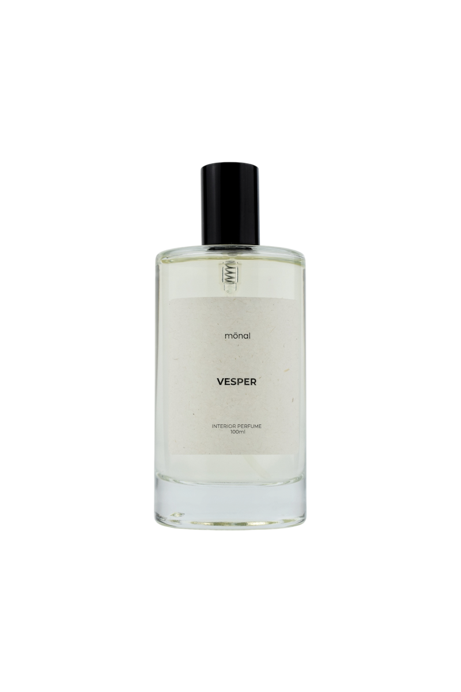
VESPER
Склад (піраміда аромату):
Верхні ноти: лаванда, бергамот
Ноти серця: перець, кедр, тютюн
База: ветивер, пачулі, сандал, мускус, дерево
Відчуття аромату:
Глибокий деревно-пряний характер зі свіжим лавандово-цитрусовим стартом.
Перець, кедр і тютюн формують теплий, насичений серцевий акцент.
Завершення — оксамитовий деревний шлейф із ветиверу, пачулі, сандалу та мускусу.
Характер і настрій:
Теплий, зрілий, спокійний, врівноважений, глибокий.
Підійде для вітальні, кабінету, спальні, зони релаксу, лаунж-простору або бібліотеки.
Це інтер’єрні парфуми для дому зі стриманим, зібраним і структурним характером.
Створюють атмосферу тиші, фокусу та внутрішньої рівноваги у просторі.
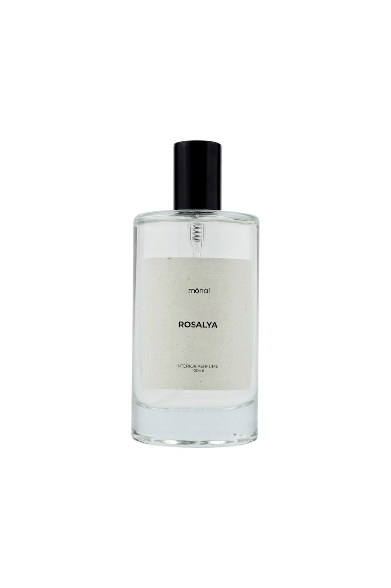
ROSALYA
Склад (піраміда аромату):
Верхні ноти: рожевий перець, бергамот
Ноти серця: троянда, жасмин
База: ваніль, амбра
Відчуття аромату:
Витончений, жіночний квітковий старт із пряністю рожевого перцю та світлою цитрусовою іскристістю бергамоту.
Насичена троянда й м’який жасмин створюють тепле округле серце без різкості.
Завершення — ванільно-амбровий шлейф, що додає солодкого тепла.
Характер і настрій:
Теплий, делікатний, квітковий, жіночний, округлий.
Підійде для спальні, вітальні, зони релаксу, гардеробної або б’юті-простору.
Це інтер’єрні парфуми для дому з м’яким, ніжним і чуттєвим звучанням.
Формують у просторі відчуття затишку, тепла та делікатної присутності.